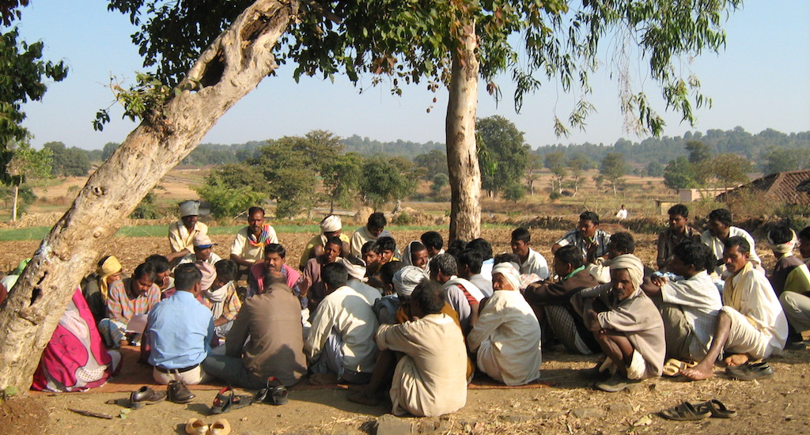

Empowering Rural Communities with Digital Governance
GramLink is a revolutionary digital governance platform designed to bridge the gap between rural citizens and their local authorities. Through community voting, issue reporting, and real-time updates, villagers can voice their concerns, track developments, and contribute to decision-making. Join us in making governance transparent, inclusive, and impactful for rural communities. 🌱
